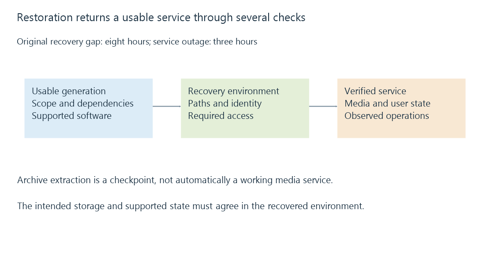

Backup restoration: recovering a usable server
Backup restoration reconstructs a usable data set in a recovery environment, then verifies its content, access and application behavior.
Restoration is the operation a backup is meant to make possible. It has to produce usable files and server state in the recovery environment, not merely demonstrate that an archive can be opened.
For an Emby server, usability includes the application data, source media, supported software versions, correct paths and access from the running server identity. These can return at different times.
Define the recovery point and the recovery service
Two useful objectives are recovery point and recovery time. The recovery point describes how old the recovered state may be. Recovery time describes how long it takes to return the service you actually need.
In an original example, the last usable backup completed at 01:00 and a loss occurred at 09:00. Up to eight hours of later changes may be absent. If recovery produces a working server at 12:00, the observed outage interval is three hours.
Recovery-point gap: 09:00 - 01:00 = 8 hours
Service recovery interval: 12:00 - 09:00 = 3 hours
A 12:00 archive extraction is not automatically a 12:00 service recovery. The server may still lack media paths, permissions or database migration. Likewise, “backup scheduled every hour” is not proof that the last usable copy is only one hour old.
A rehearsal begins with a particular generation
Identify the intended backup, its scope and any dependencies. An incremental set may require a full base and several increments. A database backup may need the complete state captured by its supported method. A snapshot of one volume may omit application files on another.
Verify that the recovery destination is the one you intend to use. A rehearsal can use a separate environment so it supplies evidence without replacing the functioning original installation.

The important evidence is not just a success message from extraction. It is whether the restored data set is complete enough for the required next operation.
The software has to interpret the saved state
A supported version relationship matters. A newer server may migrate stored data when it opens it; an older version may not understand that resulting state. Plugin data can have separate migration rules.
A server executable, plugin package and restored database are therefore not three freely interchangeable pieces. Use the documented Emby restore or migration workflow for their relationship. Keep the recovery generation intact while establishing whether that combination works.
This also explains why a restored server can launch but still be incomplete. Launch tests the initial startup path. Reading a library, retrieving user state and invoking a particular plugin exercise additional parts of the restored environment.
Path text must reach the recovered storage
The original library path might have been M:\Movies, /srv/media or a container path such as /media. Those strings must resolve in the recovered server's environment.
A restored container configuration can point to a host directory that is empty or absent. A Windows service can lack the old desktop's mapped drive. An NFS share can be present while identity mapping differs.
| Restored element | Additional verification |
|---|---|
| Library definition | Path reaches the intended media tree |
| Media files | Known files are readable under the server identity |
| User records | Expected user-specific state is available |
| Application-data location | Required writes succeed |
| Plugin configuration | Referenced resources and supported plugin version are available |
Changing the path arrangement can require supported library updates. A scan of an inaccessible or wrong tree is not the same as verifying recovered content.
Test content and behavior separately
A checksum comparison can verify particular bytes against a trusted reference. Opening media through the restored server tests storage access and playback. Checking a favorite or resume position tests recovered user state.
A small sample does not prove every file is intact, but it can expose the difference between a readable archive and a functioning server. Choose the sample around the recovery scope: a large film, a sidecar, a user record and a plugin-owned resource answer different questions.
The outcome should state what was recovered, from which point, and what remains dependent on other storage. That makes a rehearsal useful for estimating recovery time rather than turning it into a vague “backup looks fine” result.
See Also
- Application-data backups and consistent server state
- Media backups and recoverable generations
- File checksums and content verification
- Storage access from background services